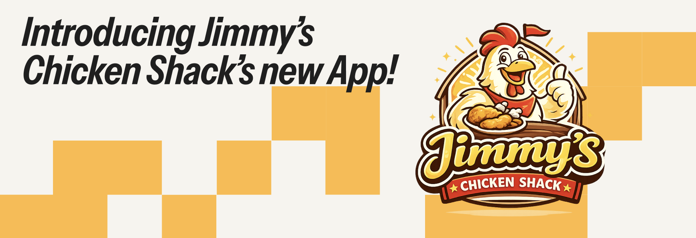
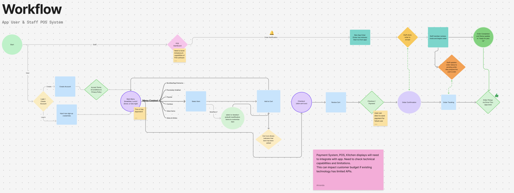
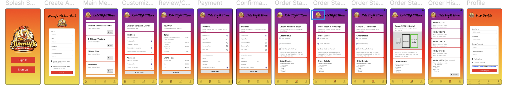
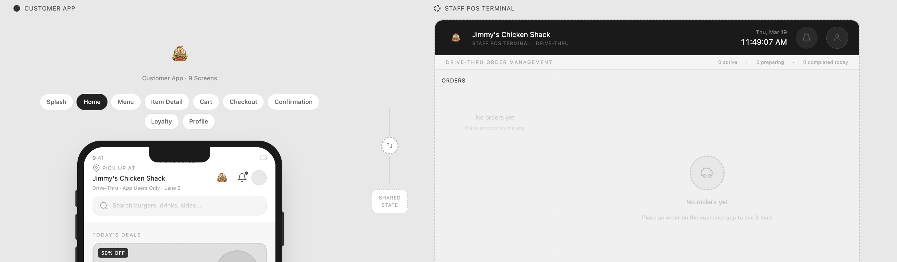

TL;DR: Designed a mobile ordering experience for Jimmy’s Chicken Shack to support late-night operations. By introducing structured ordering constraints and real-time system feedback, the solution reduces user friction while protecting staff workflows from breakdown under high-risk conditions.
Goal: Design a system that supports both customer experience and operational reliability. Improve speed and accuracy of ordering without increasing staff burden.
Challenge: Late-night service introduces a high-risk operational environment: customers are often tired or distracted, while staff coverage is reduced. This increases the likelihood of order errors, miscommunication, and workflow breakdowns.
Scope: Designed mobile-first in Figma. Focused on UI/UX flows for four key modules: Learn, Practice, Progress, and Emergency Mode. Created as a UX case study project, not a production-ready app.
Key Insights:
Constraints:

Ideation: Sketched wireframes in Figma for lo-fi prototypes. Explored interaction flows that reduce friction during ordering process & intake for staff. Structured Ordering:reduced decision fatigue
Prototyping: Built in Figma Make with AI prompt engineering. Checkbox Customization: Prevents invalid inputs. No Free Text: Eliminates ambiguity. Real-Time Feedback: Keeps users informed.
Key Decisions: Rather than maximizing freedom, the system creates a “guided lane to success.”

The final deliverable was a live prototype of a CPR guidance app with the following features:

↓ Errors
Reduced order mistakes
↑ Speed
Faster ordering flow
↑ Efficiency
Improved staff workflow
Reflection: This project emphasized designing beyond the interface. By working within constraints and real-world systems, I created a solution that improves UX while actively preventing operational failure.